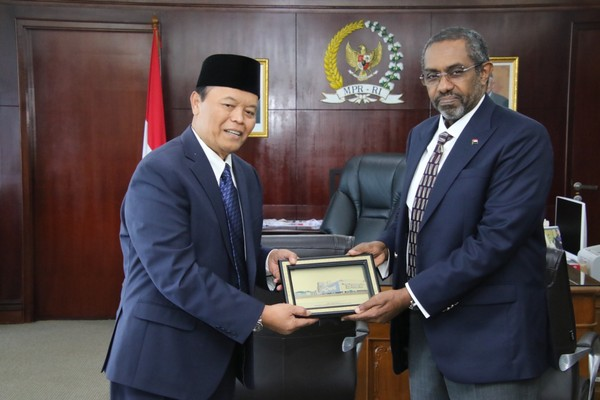

Berikut adalah terjemahan dalam bahasa Indonesia yang lebih singkat dan padat: --- **Kerja Sama Indonesia-Sudan: Bilateral, Regional, dan Multilateral** Kerja sama internasional antara Indonesia dan Sudan mencakup berbagai aspek penting dalam hubungan bilateral, regional, dan multilateral. Secara bilateral, kedua negara bekerja sama dalam bidang ekonomi, seperti perdagangan produk pertanian dan teknologi, serta pendidikan, dengan Indonesia menyediakan beasiswa bagi pelajar Sudan. Selain itu, kerja sama di bidang budaya, pariwisata, dan pertanian juga semakin berkembang. Di tingkat regional, meskipun Indonesia dan Sudan terletak di kawasan yang berbeda, keduanya terlibat dalam organisasi seperti Organisasi Konferensi Islam (OKI) dan Uni Afrika, yang memperkuat solidaritas dan kerja sama di bidang politik, ekonomi, dan keamanan. Indonesia juga mendukung inisiatif pembangunan di Afrika, termasuk di Sudan, dalam kerangka kerja sama regional. Di tingkat multilateral, kedua negara berpartisipasi dalam forum internasional seperti Perserikatan Bangsa-Bangsa (PBB) dan Organisasi Perdagangan Dunia (WTO), yang memungkinkan mereka untuk bekerja sama dalam isu-isu global seperti perdamaian, kesehatan, dan perubahan iklim. Dalam konteks ini, Indonesia dan Sudan dapat memperjuangkan kepentingan bersama untuk menciptakan kemajuan di kawasan mereka masing-masing dan berkontribusi pada perdamaian dan pembangunan global.
Pada kesempatan kali ini, saya, Sabrina Pinkan Rephauly Lumbuun dari kelas IX-3/30 ingin mempresentasikan hasil Web IL Kolaborasi IPS-PPKN-TIK. Di Web ini berisi mengenai penjelasan Kerja Sama Bilateral, Regional, Multilateral antara Indonesia dan Sudan, serta penjelasan mengenai salah satu tujuan SDGs!
Tuhan memberkati!